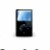

|

MP3 mini |
MP3 grande |
||||
|---|---|---|---|---|---|
| Capacidad de almacenamiento | 4GB (1.000 canciones) |
8GB (2.000 canciones) |
16GB (4.000 canciones) |
30GB (7.500 canciones) |
80GB (20.000 canciones) |
| Colores | |||||
| Pantalla | LCD de 3 cm (diagonal) con retroiluminación | LCD de 6 cm (diagonal) con retroiluminación | |||
| Tiempo de carga | Unas 3 horas | Unas 4 horas | |||
| Unas 2 horas para alcanzar el 80% de la capacidad | |||||